-
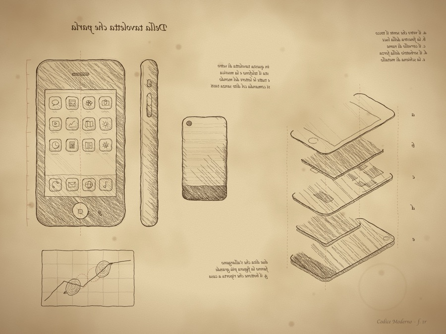
f. 1r · 2007
iPhone
Della tavoletta che parla
-
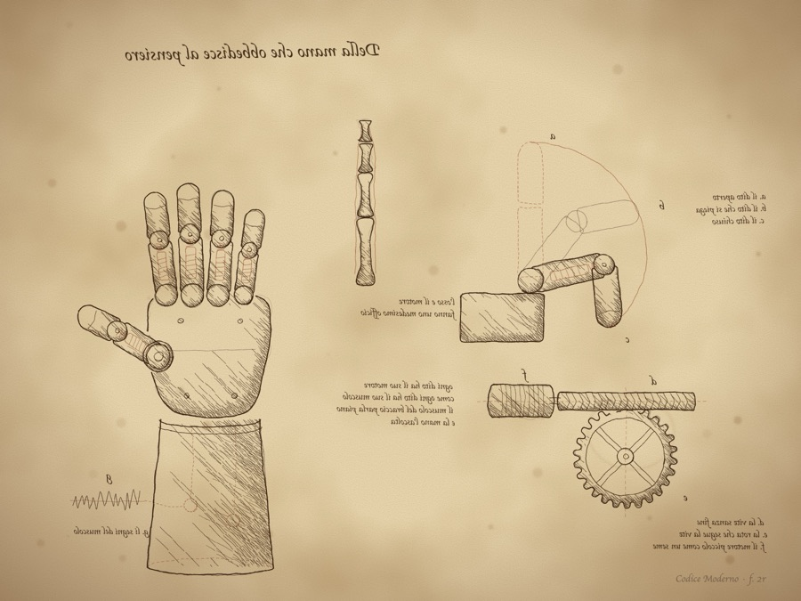
f. 2r · 2007
Bionic hand
Della mano che obbedisce al pensiero
-
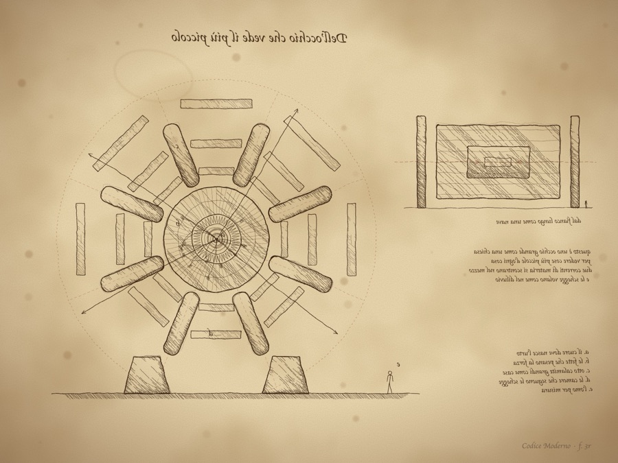
f. 3r · 2008
ATLAS detector
Dell'occhio che vede il più piccolo
-
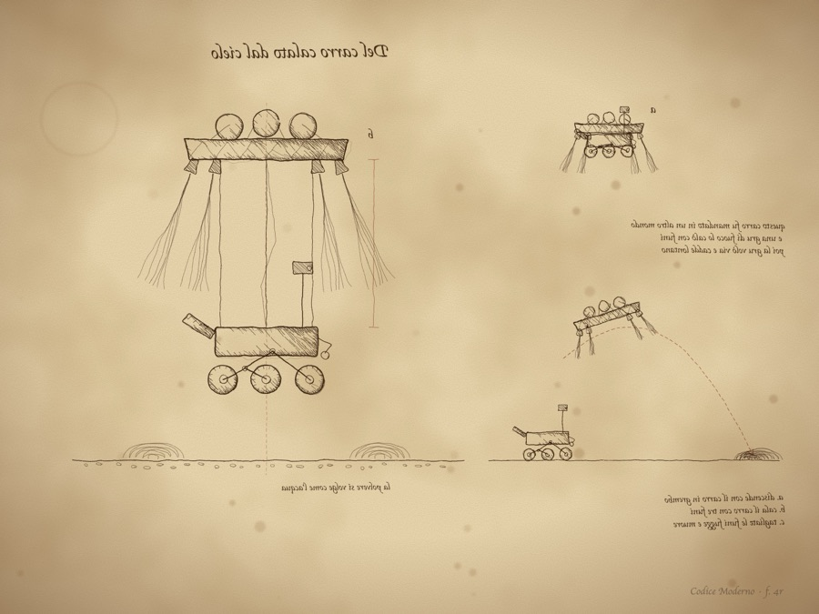
f. 4r · 2012
Mars sky crane
Del carro calato dal cielo
-
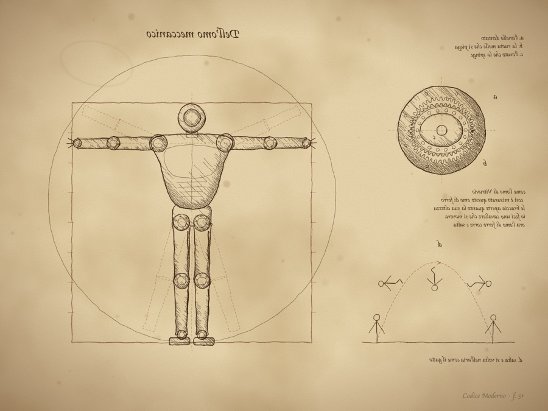
f. 5r · 2013
Humanoid robot
Dell'omo meccanico
-
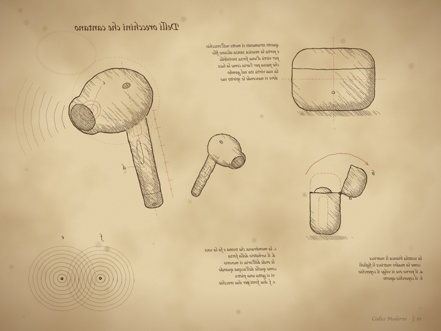
f. 6r · 2016
AirPods
Delli orecchini che cantano
-
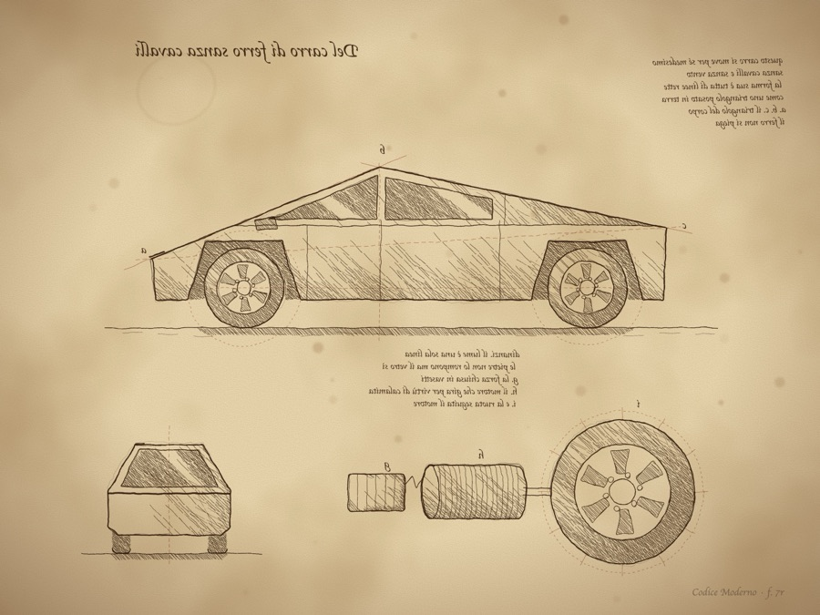
f. 7r · 2019
Cybertruck
Del carro di ferro sanza cavalli
-
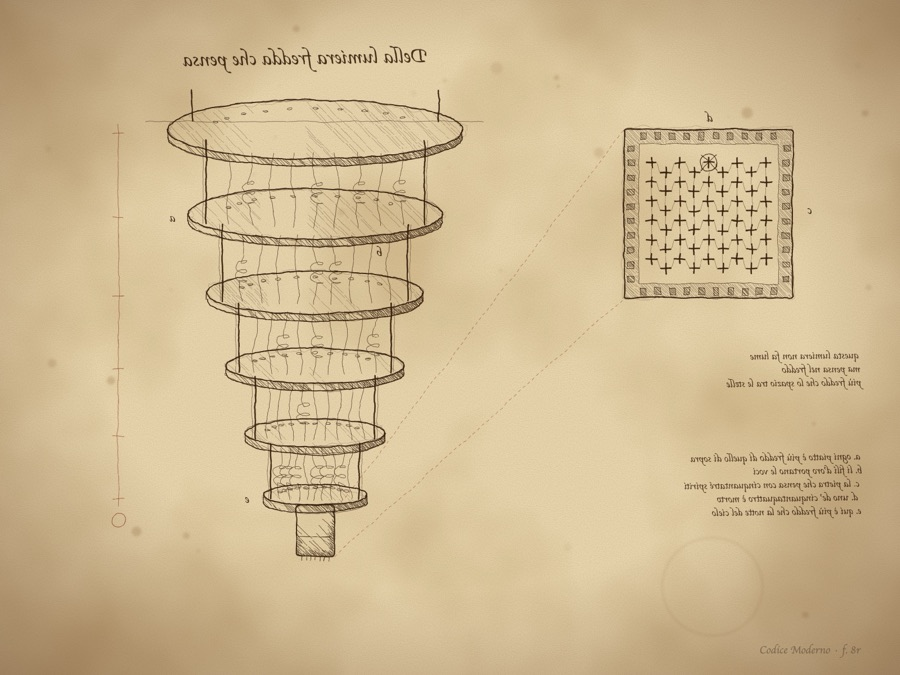
f. 8r · 2019
Quantum computer
Della lumiera fredda che pensa
-
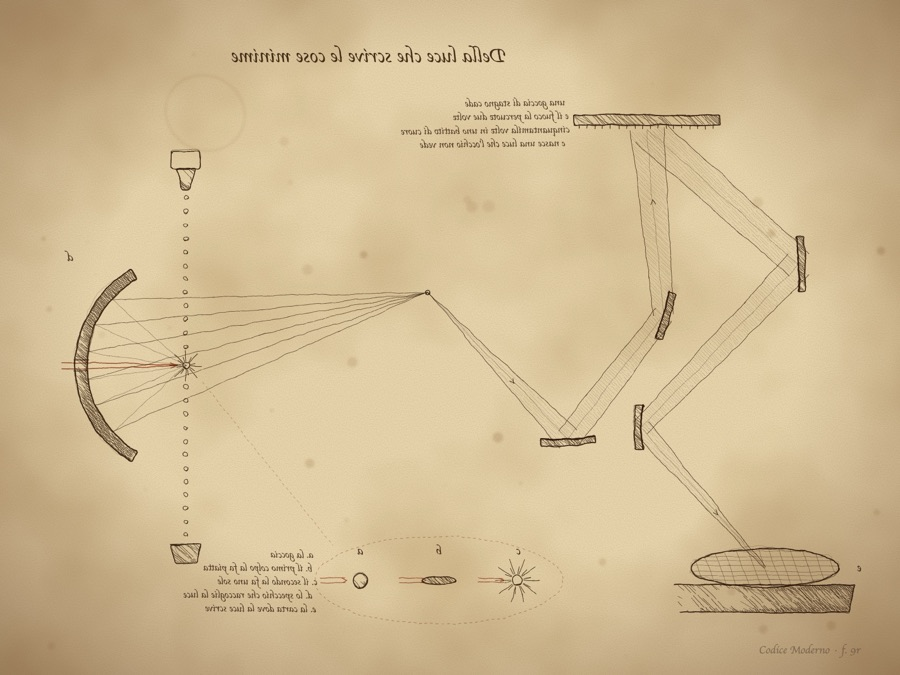
f. 9r · 2019
EUV chip machine
Della luce che scrive le cose minime
-
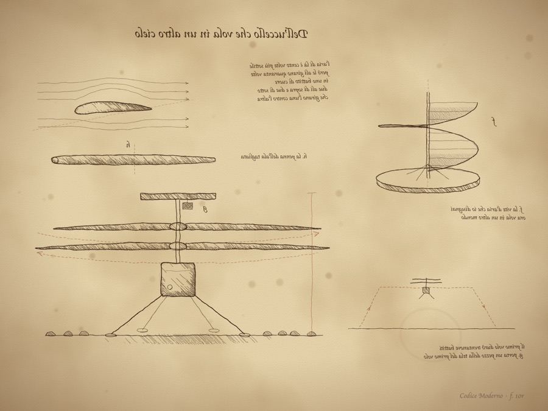
f. 10r · 2021
Ingenuity
Dell'uccello che vola in un altro cielo
-
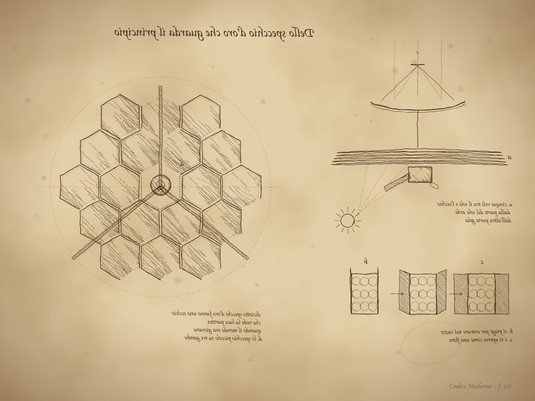
f. 11r · 2021
James Webb Space Telescope
Dello specchio d'oro che guarda il principio
-
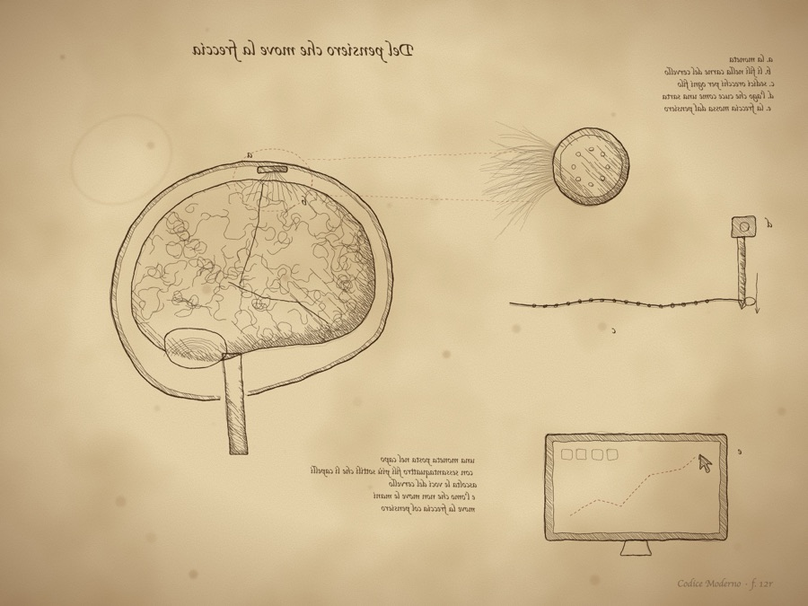
f. 12r · 2024
Neuralink implant
Del pensiero che move la freccia
-
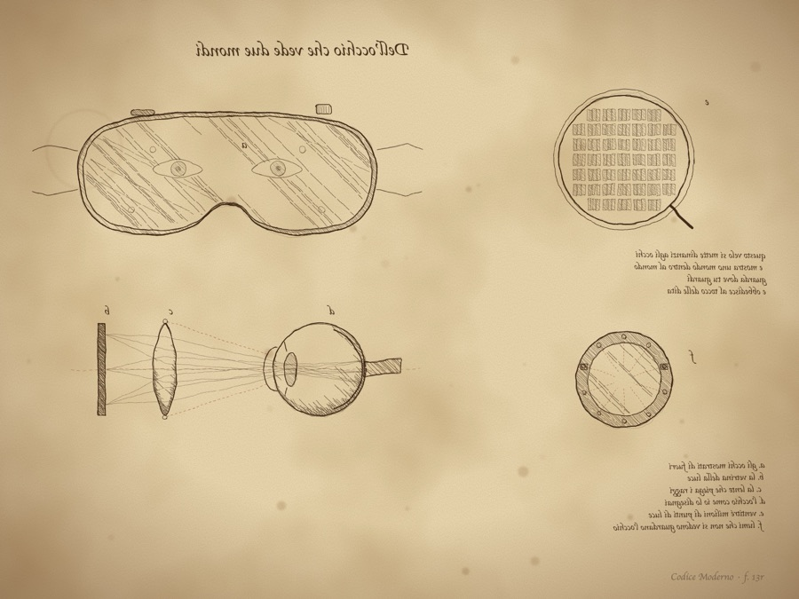
f. 13r · 2024
Vision Pro
Dell'occhio che vede due mondi
-
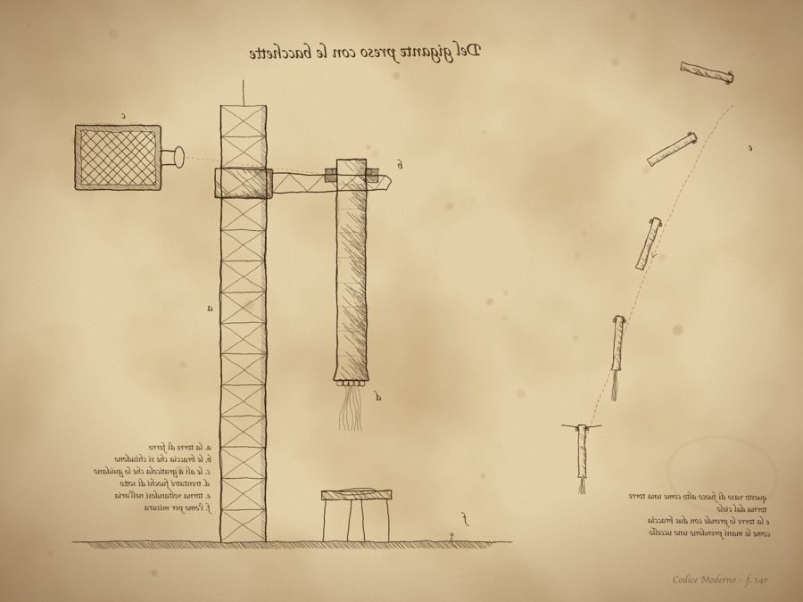
f. 14r · 2024
Starship tower catch
Del gigante preso con le bacchette